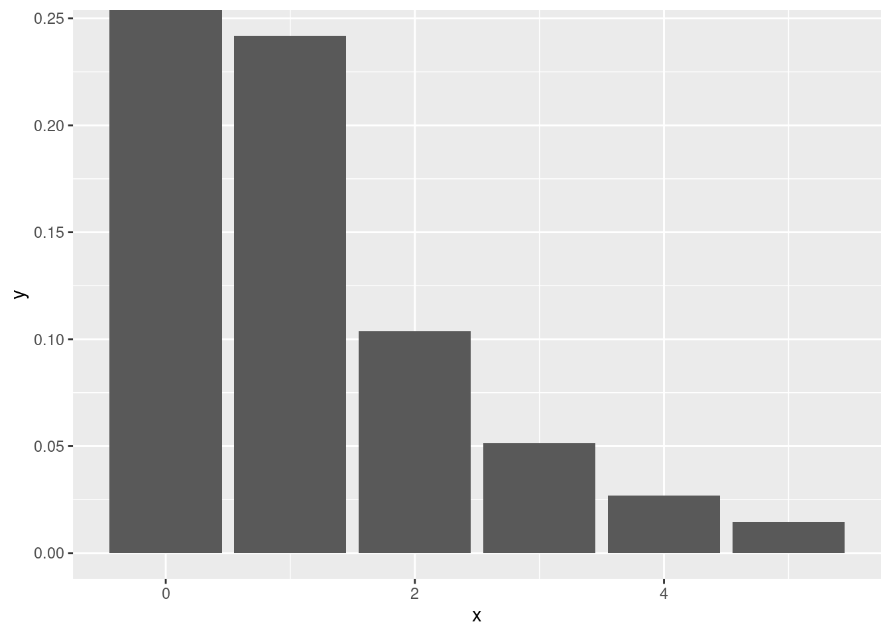
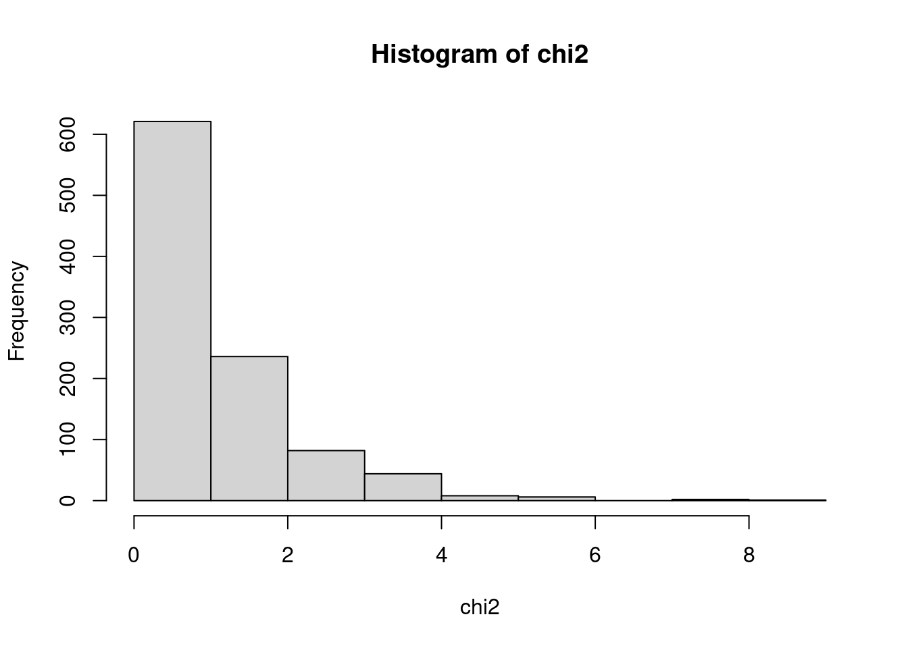
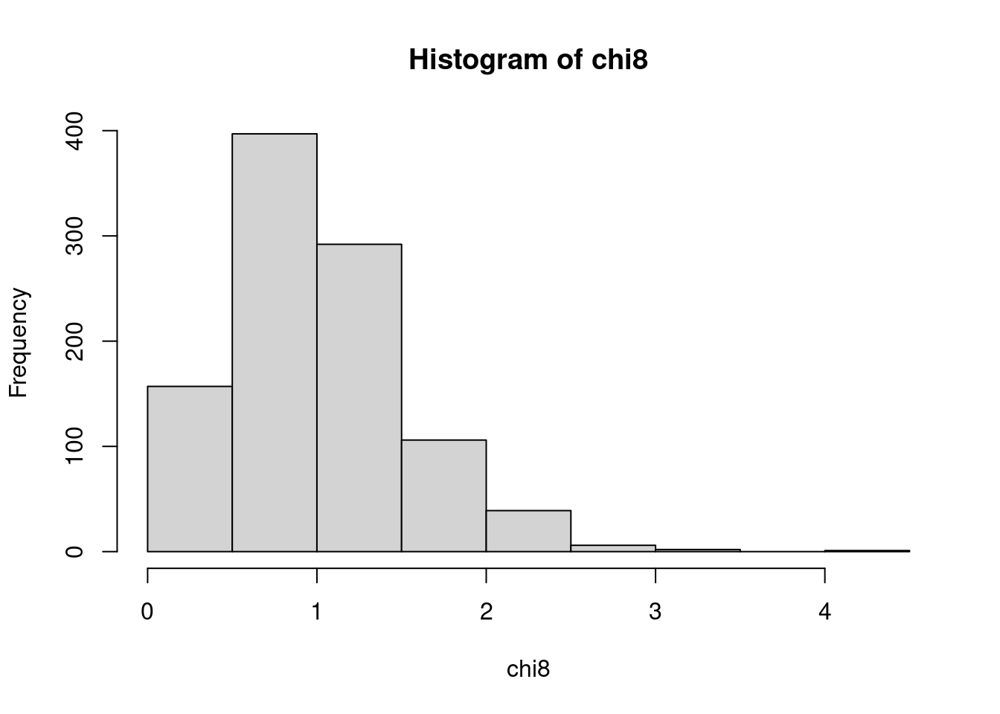
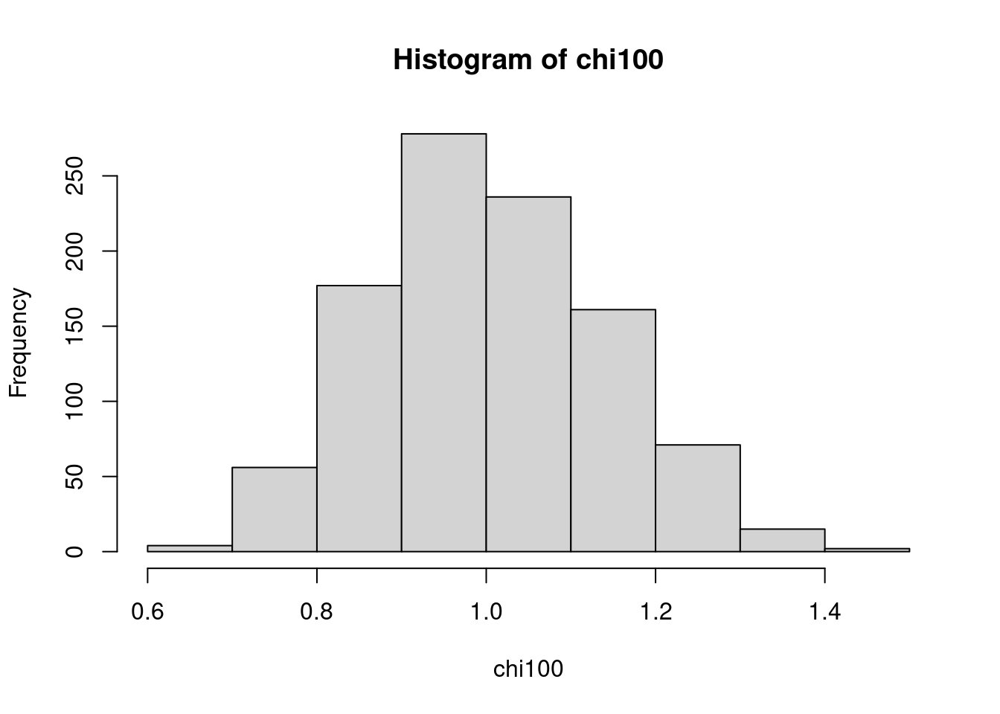
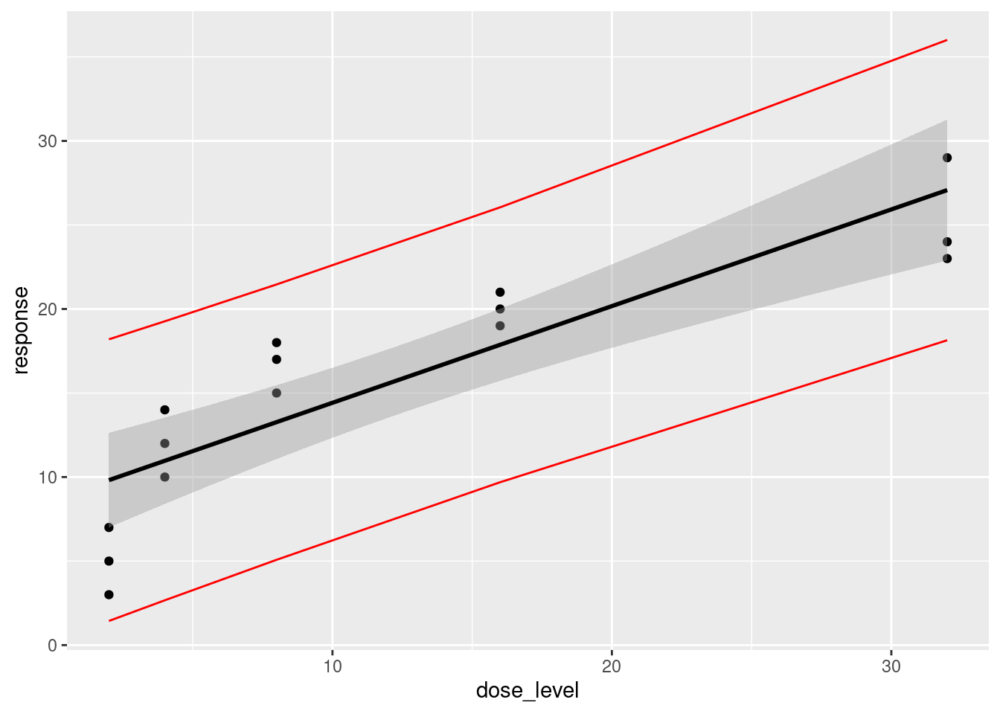
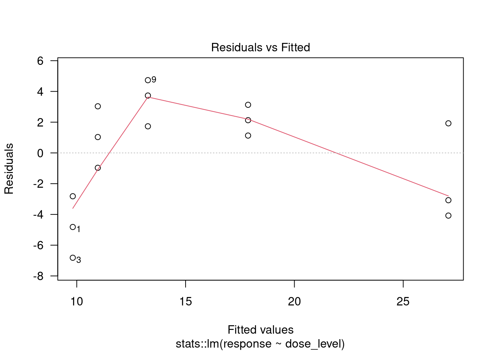
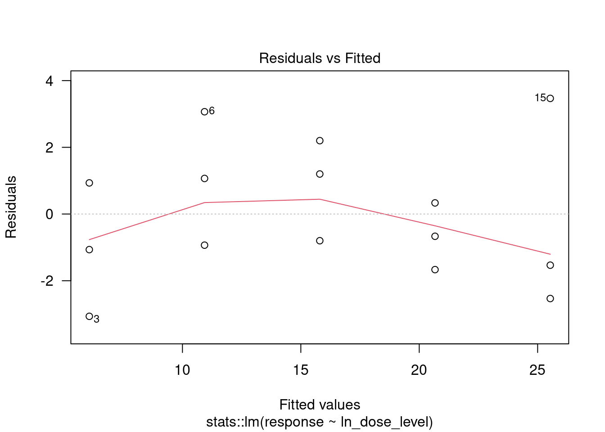

dbinom(x=4, size=4, prob=.6) + dbinom(x=3, size=4, prob=.6)*0.6 + dbinom(x=3, size=5, prob=.6)*0.6[1] 0.54432Spring 2023 MATH/COSC 3570 Introduction to Data Science by Dr. Cheng-Han Yu
set.seed(6145678).\[P(\text{Bucks wins 4 in a row}) + P(\text{Bucks wins 4 in 5 games}) + P(\text{Bucks wins 4 in 6 games})\]
dbinom(x=4, size=4, prob=.6) + dbinom(x=3, size=4, prob=.6)*0.6 + dbinom(x=3, size=5, prob=.6)*0.6[1] 0.54432## code
teams = c("bucks", "bucks", "bucks", "bucks", "warriors", "warriors", "warriors", "warriors")
set.seed(006220587)
mc4 <- replicate(10000, {
#bucks_wins_4 <- sample(c(0, 1), 4, prob = c(0.4, 0.6), replace = TRUE)
bucks_wins_4 <- rbinom(n = 1, size = 4, prob = 0.6)
bucks_wins_4 == 4
})
mc4_result = mean(mc4)
mean(mc4)[1] 0.12530.6^4[1] 0.1296mc5 <- replicate(10000, {
bucks_wins_5 <- rbinom(n = 1, size = 4, prob = 0.6)
bucks_wins_5 == 3
})
mc5_result = mean(mc5)*0.6
mc5_result[1] 0.20616dbinom(x=3, size=4, prob=.6)*0.6[1] 0.20736mc6 <- replicate(10000, {
bucks_wins_6 <- rbinom(n = 1, size = 5, prob = 0.6)
bucks_wins_6 == 3
})
mc6_result = mean(mc6)*0.6
mc6_result[1] 0.20814dbinom(x=3, size=5, prob=0.6)*0.6[1] 0.20736mc4_result + mc5_result + mc6_result[1] 0.5396Suppose random variables \(X_1, X_2, \dots, X_n\) are independent and follow Chi-squared distribution with degrees of freedom 1, \(\chi^2_{df=1}\).
dchisq() to plot \(\chi^2_{df=1}\) distribution. Consider \(x\in (0, 5)\).## code
df <- tibble(
x = 0:5,
y = dchisq(c(0:5), 1)
)
df |> ggplot(aes(x = x, y = y)) +
geom_col()
For each \(n = 2, 8, 100\),
rchisq(n, df = 1).## code
set.seed(006220587)
# 2
chi2 <- replicate(1000,
mean(rchisq(2, df = 1)))
chi2 |> hist()
#8
chi8 <- replicate(1000,
mean(rchisq(8, df = 1)))
chi8 |> hist()
#100
chi100 <- replicate(1000,
mean(rchisq(100, df = 1)))
chi100 |> hist()
A pharmaceutical firm would like to obtain information on the relationship between the dose level and potency of a drug product. To do this, each of 15 test tubes is inoculated with a virus culture and incubated for 5 days at 30°C. Three test tubes are randomly assigned to each of the five different dose levels to be investigated (2, 4, 8, 16, and 32 mg). Each tube is injected with only one dose level, and the response of interest is obtained.
dose.csv in the /data folder into your R session. The data set is not tidy. Use pivot_longer() to make it tidy as the shown tibble below. Call the tidy data set dose_tidy.## code
dose <- read_csv("./data/dose.csv", show_col_types = TRUE)Rows: 5 Columns: 4
── Column specification ────────────────────────────────────────────────────────
Delimiter: ","
dbl (4): dose_level, tube_1, tube_2, tube_3
ℹ Use `spec()` to retrieve the full column specification for this data.
ℹ Specify the column types or set `show_col_types = FALSE` to quiet this message.dose# A tibble: 5 × 4
dose_level tube_1 tube_2 tube_3
<dbl> <dbl> <dbl> <dbl>
1 2 5 7 3
2 4 10 12 14
3 8 15 17 18
4 16 20 21 19
5 32 23 24 29dose_tidy <- dose |> pivot_longer(cols = tube_1:tube_3,
names_to = "tube",
values_to = "response"
)
dose_tidy# A tibble: 15 × 3
dose_level tube response
<dbl> <chr> <dbl>
1 2 tube_1 5
2 2 tube_2 7
3 2 tube_3 3
4 4 tube_1 10
5 4 tube_2 12
6 4 tube_3 14
7 8 tube_1 15
8 8 tube_2 17
9 8 tube_3 18
10 16 tube_1 20
11 16 tube_2 21
12 16 tube_3 19
13 32 tube_1 23
14 32 tube_2 24
15 32 tube_3 29## # A tibble: 15 × 3
## dose_level tube response
## <dbl> <chr> <dbl>
## 1 2 tube1 5
## 2 2 tube2 7
## 3 2 tube3 3
## 4 4 tube1 10
## 5 4 tube2 12
## 6 4 tube3 14
## 7 8 tube1 15
## 8 8 tube2 17
## 9 8 tube3 18
## 10 16 tube1 20
## 11 16 tube2 21
## 12 16 tube3 19
## 13 32 tube1 23
## 14 32 tube2 24
## 15 32 tube3 29response. Print the fitted result.## code
doseLin1 <- linear_reg() |>
set_engine("lm") |>
fit(response ~ dose_level, data = dose_tidy)
doseLin1parsnip model object
Call:
stats::lm(formula = response ~ dose_level, data = data)
Coefficients:
(Intercept) dose_level
8.6667 0.5753 ## code
confLin <- as.tibble(predict(doseLin1$fit,
interval = "prediction",
level = 0.95))Warning: `as.tibble()` was deprecated in tibble 2.0.0.
ℹ Please use `as_tibble()` instead.
ℹ The signature and semantics have changed, see `?as_tibble`.Warning in predict.lm(doseLin1$fit, interval = "prediction", level = 0.95): predictions on current data refer to _future_ responsesdoseLin1$fit |> ggplot(aes(x = dose_level, y = response)) +
geom_point() +
geom_smooth(method = 'lm', se = TRUE, color = 'black') +
geom_line(aes(x = dose_level, y = confLin$lwr),
color = 'red') +
geom_line(aes(x = dose_level, y = confLin$upr),
color = 'red')`geom_smooth()` using formula = 'y ~ x'
response, where \(\ln = \log_e\). Print the fitted result.## code
dose_tidy <- dose_tidy |> mutate(ln_dose_level = log(dose_level))
doseLin2 <- linear_reg() |>
set_engine("lm") |>
fit(response ~ ln_dose_level, data = dose_tidy)
doseLin2parsnip model object
Call:
stats::lm(formula = response ~ ln_dose_level, data = data)
Coefficients:
(Intercept) ln_dose_level
1.200 7.021 #|eval: false
## code
confLin <- as.tibble(predict(doseLin2$fit,
interval = "prediction",
level = 0.95))Warning in predict.lm(doseLin2$fit, interval = "prediction", level = 0.95): predictions on current data refer to _future_ responsesdoseLin2$fit |> ggplot(aes(x = ln_dose_level, y = response)) +
geom_point() +
geom_smooth(method = 'lm', se = TRUE, color = 'black') +
geom_line(aes(x = ln_dose_level, y = confLin$lwr),
color = 'red') +
geom_line(aes(x = ln_dose_level, y = confLin$upr),
color = 'red')`geom_smooth()` using formula = 'y ~ x'
## code
plot(doseLin1$fit, which = 1, las = 1)
plot(doseLin2$fit, which = 1, las = 1)
There seems to be less of a pattern in the regression plot using ln_dose_level (the second one), whereas the first one seems to be overfitted, so the model used in the second regression plot is the better model.
dose_tidy.csv and redo (2) using Python. Show the slope and intercept.
# code
import numpy as np
import pandas as pd
from sklearn.linear_model import LinearRegression
dose_tidy = pd.read_csv('./data/dose_tidy.csv')
x = np.array(dose_tidy['dose_level']).reshape(-1, 1)
y = np.array(dose_tidy['response']).reshape(-1, 1)
reg = LinearRegression().fit(x, y)
reg.coef_array([[0.57526882]])reg.intercept_array([8.66666667])
# code
new_input = np.arange(10, 20, 30).reshape(-1, 1)
pred = reg.predict(new_input)
predarray([[14.41935484]])body.csv in the /data folder. Split the data into a training set and a test set. Set the random seed at your student ID number. Use 80:20 rule.# code
set.seed(006220587)
body <- read_csv("./data/body.csv", show_col_types = TRUE)Rows: 300 Columns: 15
── Column specification ────────────────────────────────────────────────────────
Delimiter: ","
dbl (15): AGE, GENDER, PULSE, SYSTOLIC, DIASTOLIC, HDL, LDL, WHITE, RED, PLA...
ℹ Use `spec()` to retrieve the full column specification for this data.
ℹ Specify the column types or set `show_col_types = FALSE` to quiet this message.df_split <- rsample::initial_split(
data = body,
prop = 0.8)
df_trn <- rsample::training(df_split)
dim(df_trn)[1] 240 15df_tst <- rsample::testing(df_split)
dim(df_tst)[1] 60 15HEIGHT using the training sample data. Find the probability that the subject is male given HEIGHT = 165.# code
library(tidymodels)
logis_mdl_ht <- parsnip::logistic_reg() |>
set_engine("glm")
df_trn$GENDER <- factor(df_trn$GENDER)
logis_fit_ht <- logis_mdl_ht |>
fit(GENDER ~ HEIGHT,
data = df_trn,
family = "binomial")
predict(logis_fit_ht$fit, newdata = data.frame(HEIGHT = 165), type = "response") 1
0.3303152 BMI using the training sample data. Find the probability that the subject is male given BMI = 25.# code
library(tidymodels)
logis_mdl_bmi <- parsnip::logistic_reg() |>
set_engine("glm")
logis_fit_bmi <- logis_mdl_bmi |>
fit(GENDER ~ BMI,
data = df_trn,
family = "binomial")
predict(logis_fit_bmi$fit, newdata = data.frame(BMI = 165), type = "response") 1
0.002603268 # code
# height
pred_ht <-
pull(predict(logis_fit_ht, df_tst))
## Test accuracy rate
mean(pred_ht == df_tst$GENDER)[1] 0.85# bmi
pred_bmi <-
pull(predict(logis_fit_bmi, df_tst))
## Test accuracy rate
mean(pred_bmi == df_tst$BMI)[1] 0The better test accuracy rate is from the regression fitted to HEIGHT. It is around 85% while the test accuracy rate is 0% for BMI
body data into a training set and a test set.
## code
import numpy as np
import pandas as pd
from sklearn.model_selection import train_test_split
body = pd.read_csv('./data/body.csv')
body['GENDER'] = body['GENDER'].astype('category')
X = body[['HEIGHT']]
Y = body[['GENDER']]
X HEIGHT
0 172.0
1 186.0
2 154.4
3 160.5
4 179.0
.. ...
295 162.7
296 146.7
297 181.0
298 162.2
299 165.4
[300 rows x 1 columns]Y GENDER
0 0
1 1
2 0
3 1
4 1
.. ...
295 1
296 0
297 1
298 0
299 1
[300 rows x 1 columns]X_trn, X_tst, y_trn, y_tst = train_test_split(X, Y, test_size=0.2, random_state=6220587)
X_trn HEIGHT
26 169.3
257 181.1
216 164.4
18 178.8
256 178.2
.. ...
37 163.6
269 161.9
168 156.6
24 149.0
277 171.1
[240 rows x 1 columns]y_trn GENDER
26 1
257 1
216 0
18 0
256 1
.. ...
37 0
269 0
168 0
24 0
277 0
[240 rows x 1 columns]BMI using the training sample data. Find the probability that the subject is male given BMI = 25.
# code
from sklearn.linear_model import LogisticRegression
x = np.array(X_trn['HEIGHT']).reshape(-1, 1) ## 2d array with one column
xarray([[169.3],
[181.1],
[164.4],
[178.8],
[178.2],
[181.1],
[180.4],
[174.4],
[165.2],
[156.3],
[172. ],
[175.1],
[180.5],
[160.5],
[183.6],
[159.9],
[175.9],
[166.1],
[180. ],
[188.4],
[170. ],
[162.6],
[170.7],
[169.7],
[148.7],
[167.9],
[173.5],
[162. ],
[165.8],
[167.6],
[166.6],
[166.4],
[146.7],
[151.6],
[162.5],
[173.2],
[177.1],
[156.5],
[176.7],
[171.9],
[154.6],
[166.7],
[176.8],
[175.5],
[165.7],
[163.1],
[162.4],
[172.5],
[166.2],
[159.4],
[173.6],
[190.3],
[155. ],
[161.6],
[155.5],
[157.3],
[170.9],
[174.8],
[173.8],
[186.3],
[164.7],
[186. ],
[171.5],
[155.1],
[174.9],
[164. ],
[175.7],
[178.4],
[179.8],
[166.9],
[165.6],
[164.7],
[155.4],
[162.8],
[183.6],
[169.1],
[159.5],
[155. ],
[168.9],
[168.5],
[180.4],
[158.4],
[156.5],
[160.3],
[153.2],
[156.8],
[162.2],
[164.1],
[157.6],
[180.1],
[144.2],
[169.7],
[160. ],
[152.4],
[180.3],
[169.1],
[161.9],
[189.7],
[172.6],
[181.4],
[159. ],
[183.1],
[176.3],
[174.7],
[187.2],
[168.5],
[166.6],
[170.4],
[155.6],
[174.6],
[157.4],
[158.4],
[161.2],
[169.1],
[178.7],
[161.5],
[166.9],
[169.1],
[171.4],
[157.8],
[181.1],
[149.5],
[177.2],
[179.1],
[165.3],
[172.2],
[178.6],
[167.1],
[178.7],
[162.5],
[179. ],
[178.6],
[171.1],
[169.3],
[172.6],
[155.6],
[171.7],
[177.5],
[154.4],
[169.8],
[168.6],
[164.5],
[155. ],
[162.9],
[171.5],
[162.9],
[161.4],
[162.9],
[169.1],
[160.3],
[165.4],
[162.7],
[147.9],
[193.3],
[163.3],
[181.7],
[174.4],
[184.3],
[171.9],
[170. ],
[176.6],
[166.1],
[162.2],
[185.1],
[174.3],
[162.8],
[159.4],
[167. ],
[170.5],
[168.2],
[170.5],
[160. ],
[158.4],
[181.9],
[169.3],
[170.1],
[167.5],
[172.9],
[155.6],
[182. ],
[166.4],
[173.7],
[183.7],
[166.3],
[160.6],
[185.7],
[167.1],
[162.2],
[170.6],
[164.6],
[169.8],
[155.6],
[164. ],
[166.1],
[183.5],
[153.3],
[162.5],
[167.5],
[169. ],
[167.7],
[172.1],
[165.4],
[166.9],
[180.8],
[154.9],
[167.7],
[157.5],
[160.1],
[163.1],
[165.6],
[160.2],
[159.5],
[154.8],
[183. ],
[163.3],
[170.9],
[155.7],
[185.1],
[174.4],
[182.9],
[174.4],
[170.4],
[179.4],
[178.7],
[182.8],
[150.6],
[177.5],
[163. ],
[165.4],
[181. ],
[160.6],
[167.6],
[154.1],
[170. ],
[152. ],
[163.6],
[161.9],
[156.6],
[149. ],
[171.1]])y = np.array(y_trn['GENDER']) ## 1d array
yarray([1, 1, 0, 0, 1, 1, 1, 1, 0, 0, 0, 0, 1, 1, 1, 1, 1, 0, 1, 1, 1, 0,
1, 1, 0, 1, 1, 1, 0, 0, 0, 1, 0, 0, 0, 1, 1, 0, 1, 1, 0, 1, 1, 1,
1, 0, 1, 1, 1, 0, 0, 1, 0, 1, 0, 0, 0, 1, 1, 1, 0, 1, 1, 0, 1, 0,
1, 1, 1, 1, 0, 0, 0, 0, 1, 0, 0, 1, 0, 1, 1, 0, 0, 0, 0, 0, 0, 0,
0, 1, 0, 0, 0, 0, 1, 0, 1, 1, 1, 0, 0, 1, 1, 1, 1, 1, 1, 1, 0, 1,
0, 0, 0, 0, 1, 0, 0, 1, 1, 0, 1, 0, 1, 1, 1, 1, 1, 1, 1, 0, 1, 1,
1, 0, 1, 0, 1, 1, 0, 0, 0, 1, 0, 0, 1, 0, 0, 0, 1, 0, 1, 1, 0, 1,
0, 1, 1, 1, 1, 1, 1, 0, 0, 1, 1, 0, 0, 0, 1, 1, 1, 0, 0, 1, 1, 1,
1, 1, 0, 1, 1, 1, 1, 1, 1, 1, 0, 0, 0, 0, 1, 0, 0, 0, 1, 0, 0, 1,
1, 0, 0, 0, 0, 1, 0, 0, 0, 0, 0, 1, 0, 0, 0, 1, 0, 0, 0, 1, 1, 1,
1, 1, 1, 1, 1, 0, 1, 0, 1, 1, 0, 0, 0, 1, 0, 0, 0, 0, 0, 0])clf = LogisticRegression().fit(x, y)
new_data = pd.DataFrame({'BMI': [25]})
prob_male = clf.predict(new_data)/cloud/project/myenv/lib/python3.8/site-packages/sklearn/base.py:432: UserWarning: X has feature names, but LogisticRegression was fitted without feature names
warnings.warn(print(prob_male)[0]
# code
y_pred = clf.predict(X_tst)/cloud/project/myenv/lib/python3.8/site-packages/sklearn/base.py:432: UserWarning: X has feature names, but LogisticRegression was fitted without feature names
warnings.warn(from sklearn.metrics import confusion_matrix
confusion_matrix(y_tst, y_pred)array([[21, 11],
[ 4, 24]])y_tst_arr = np.array(y_tst['GENDER'])
#y_tst = y_tst[:, 1]
y_tst_arrarray([0, 1, 0, 0, 1, 1, 1, 0, 0, 1, 0, 0, 1, 1, 0, 0, 1, 0, 0, 1, 0, 1,
0, 1, 1, 1, 0, 0, 1, 1, 0, 0, 0, 0, 1, 1, 0, 0, 0, 1, 0, 1, 0, 0,
1, 0, 1, 0, 1, 1, 0, 1, 1, 1, 0, 0, 1, 1, 0, 0])y_predarray([1, 1, 0, 0, 1, 1, 1, 1, 1, 0, 1, 0, 0, 1, 0, 1, 1, 0, 0, 1, 0, 1,
0, 1, 1, 1, 0, 0, 1, 1, 1, 0, 1, 0, 0, 0, 0, 1, 0, 1, 1, 1, 0, 0,
1, 1, 1, 0, 1, 1, 0, 1, 1, 1, 0, 0, 1, 1, 0, 1])np.mean(y_tst_arr == y_pred)0.75BMI on the training data and do the classification on the same test set used in logistic regression. Obtain the confusion matrix for each \(K\). Which \(K\) performs better? Why?# code
(knn_recipe <- recipes::recipe(GENDER ~ HEIGHT, data = df_trn) |>
step_normalize(all_predictors()))Recipe
Inputs:
role #variables
outcome 1
predictor 1
Operations:
Centering and scaling for all_predictors()(knn_mdl1 <- parsnip::nearest_neighbor(neighbors = 1) |>
set_mode("classification") |>
set_engine("kknn"))K-Nearest Neighbor Model Specification (classification)
Main Arguments:
neighbors = 1
Computational engine: kknn (knn_mdl10 <- parsnip::nearest_neighbor(neighbors = 10) |>
set_mode("classification") |>
set_engine("kknn"))K-Nearest Neighbor Model Specification (classification)
Main Arguments:
neighbors = 10
Computational engine: kknn (knn_fit1 <- workflows::workflow() |>
add_recipe(knn_recipe) |>
add_model(knn_mdl1) |>
fit(data = df_trn))══ Workflow [trained] ══════════════════════════════════════════════════════════
Preprocessor: Recipe
Model: nearest_neighbor()
── Preprocessor ────────────────────────────────────────────────────────────────
1 Recipe Step
• step_normalize()
── Model ───────────────────────────────────────────────────────────────────────
Call:
kknn::train.kknn(formula = ..y ~ ., data = data, ks = min_rows(1, data, 5))
Type of response variable: nominal
Minimal misclassification: 0.2291667
Best kernel: optimal
Best k: 1(knn_fit10 <- workflows::workflow() |>
add_recipe(knn_recipe) |>
add_model(knn_mdl10) |>
fit(data = df_trn))══ Workflow [trained] ══════════════════════════════════════════════════════════
Preprocessor: Recipe
Model: nearest_neighbor()
── Preprocessor ────────────────────────────────────────────────────────────────
1 Recipe Step
• step_normalize()
── Model ───────────────────────────────────────────────────────────────────────
Call:
kknn::train.kknn(formula = ..y ~ ., data = data, ks = min_rows(10, data, 5))
Type of response variable: nominal
Minimal misclassification: 0.2
Best kernel: optimal
Best k: 10knn_pred1 <-
pull(predict(knn_fit1, df_tst))
## Confusion matrix
table(knn_pred1, df_tst$GENDER)
knn_pred1 0 1
0 17 5
1 7 31## Test accuracy rate
mean(knn_pred1 == df_tst$GENDER)[1] 0.8knn_pred10 <-
pull(predict(knn_fit10, df_tst))
## Confusion matrix
table(knn_pred10, df_tst$GENDER)
knn_pred10 0 1
0 19 9
1 5 27## Test accuracy rate
mean(knn_pred10 == df_tst$GENDER)[1] 0.7666667The test accuracy rate is better for k=1 than k=10, meaning that k=1 performs better because a higher percentage of correct predictions were made with k=1